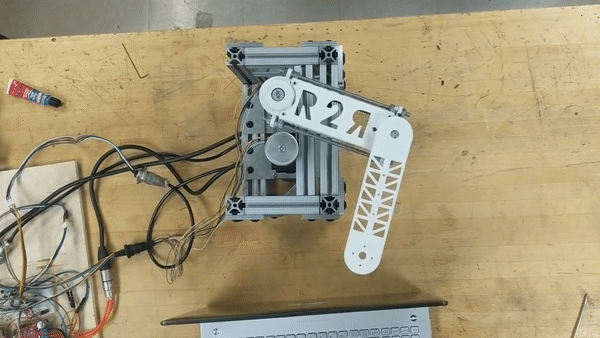
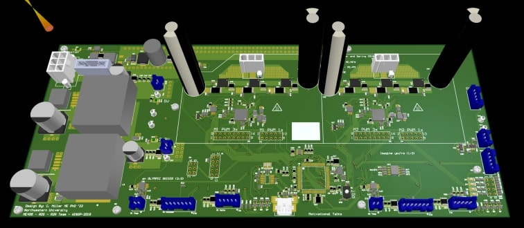

Two-Joint, Direct-Drive Robot Arm
 This course matches students of different backgrounds (CS, EE, ME, etc.) in a team to solve an electro mechanical problem for a client within the university. Our "client," another professor in the mechanical engineering department, wanted a two-joint (2R), direct-drive robot arm for teaching students about robot arm control. The project's sponsor requested the arm be easy-to-program, table-top sized, configurable in multiple modes (e.g. one motor removed), and easily serviceable. The aim was to allow students to understand how robot arm control works at all levels: from hardware to software to control.
 On this team, I served as the sole electrical engineer where I designed the entire electrical system prototype. I selected all of the sensors, designed the schematics and, designed the PCB layout. Furthermore, I worked alongside a multi-disciplinary team to ensure all requirements were met, designed cross-team test plans, and maintained system documentation. The project was delivered on-time.
Further Information
I worked on this project while I was a graduate student at Northwestern University working as part of a two-quarter class, ME 495: Robot Design Studio. The project's final report, schematics, cable harness designs, and electronics documentation were the my contributions to the team's deliverables.
Skills and Tools Used
- Mixed-Signal Circuit Design
- Motor Controller Design
- PCB Layout and Assembly
- Altium Designer
- Cable Harness Design and Assembly